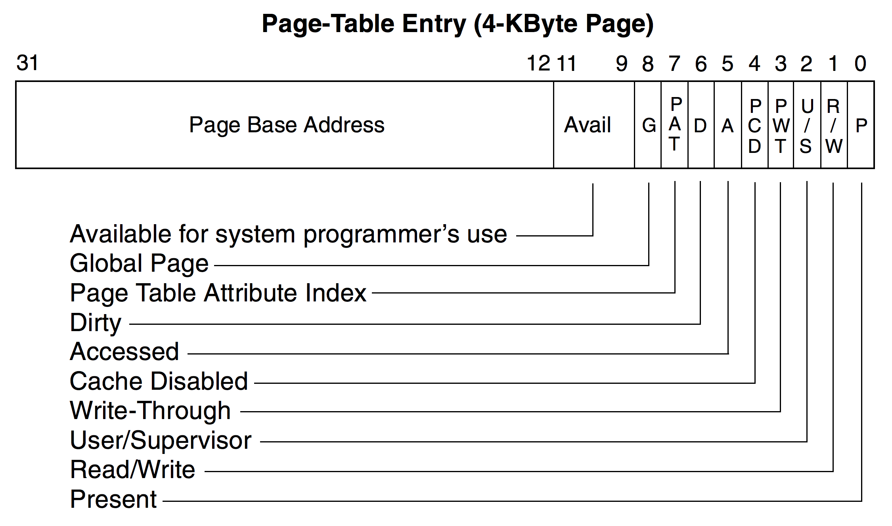
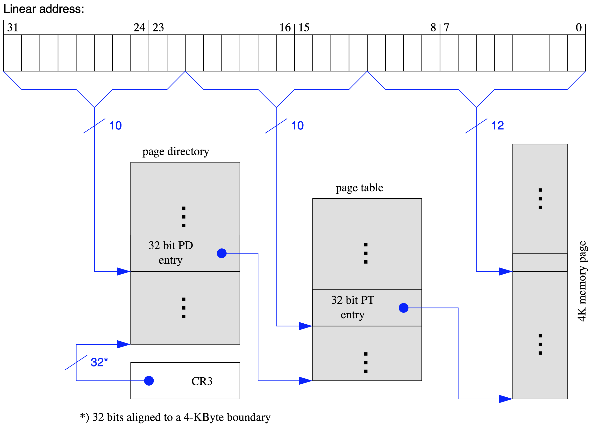

Learning Objectives#
The learning objectives for Ideal Indirection are:
- Virtual Memory
- The virtual address translation process
- Memory Management Unit (MMU)
- Page Tables
- Translation Lookaside Buffer (TLB)
Quizziz/Attendance#
For this week’s quizziz username mapping/feedback form see this link https://docs.google.com/forms/d/e/1FAIpQLSdmmKmx6XHaUtXgLVGtQzOFdIS1zuuInFjbOWqOwkk_Xcy_HA/viewform.
Overview#
In this assignment, you will be working on managing a mapping of 32-bit virtual address space to a 32-bit physical address space with 4 KB (kilobyte) pages.
Each component of virtual memory has been split up into several files to help you build a mental model of virtual memory.
Reading through these files can start to help you understand the roles of the different hardware and software involved in managing virtual memory.
You will only have to write two functions in mmu.c, but it requires a good understanding of the wikibook and decent knowledge of the rest of the provided code.
The rest of this documentation will serve to help you understand the purpose of each file and give you a high level understanding of virtual memory. The implementation details of each function are documented in the header and source files. It is your responsibility to read every line of code before starting this assignment, since you will not be able to do anything meaningful otherwise.
Page Tables (page_table.c and page_table.h)
Each process has two levels of paging:
The top level page table is known as a “page directory” and has entries (page directory entries) that hold the base address of page tables (beginning of a page table).
Each of these page tables hold entries (page table entries) that hold the base address of an actual frame in physical memory, which you will be reading from and writing to.
There are other metadata bits in both the page directory and page table entries that is explained in detail in page_table.h.
The actual layout is taken directly from a real 32 bit processor and operating system, which you can read more about in the “IA-32 Intel® Architecture Software Developer’s Manual”.
For illustrative purposes a Page Table Entry looks like the following:

Each entry is represented as a struct with bit fields whose syntax you can learn about in a tutorial. The bit fields basically allows us to squeeze multiple flags into a single 32 bit integer. This means that each entry has not only the physical address to the lower level paging structure, but also metadata bits/flags which are documented in the header file. However for the purpose of this lab you are only responsible for knowing how the following fields works:
- Page base address, bits 12 through 32
- Present (P) flag, bit 0
- Read/write (R/W) flag, bit 1
- User/supervisor (U/S) flag, bit 2
- Accessed (A) flag, bit 5
- Dirty (D) flag, bit 6
More detailed information about the function of each permission bit is described page_table.h. Here are some helpful
guidelines for correctly setting the bits:
- Once a
page_directory_entryis created, it will remain in physical memory and will not be swapped to disk. - Each segmentation has a
permissionsfield, and there is a permissions struct insegments.h. Ifpermissions & WRITEis not0, then it has write permission. Same is true forREADandEXEC. -
page_directory_entry’s should always have read and write permission - For the purposes of this lab, all
page_table_entrys andpage_directory_entrys will have theuser_supervisorflag set to1 - You only need to keep track of Accessed and Dirty flags for each
page_table_entry, based on any reading or writing that has occurred to thebase_addrstored by thepage_table_entry.
Translation Lookaside Buffer (tlb.c and tlb.h)#
The Translation Lookaside Buffer will cache the base virtual address to the corresponding page table entry pointer. The implementation and header is provided to you. Make note of the use of double pointers.
The reason why our TLB caches page table entry pointers instead of physical addresses of frames is because you will need to set metadata bits when translating addresses.
Segments (segments.c and segments.h)
A process’s virtual address space is divided into several segments. You are familiar with many of these:
- Stack
- Heap
- BSS
- Data
- Code
For this lab, a processes’ address space is split into memory segments like so:

Photo Cred: http://duartes.org/gustavo/blog/post/anatomy-of-a-program-in-memory/
Notice how some of the memory segments like the stack and mmap have an arrow pointing down. This indicates that these regions “grow down” by decreasing their end boundry’s virtual address as you add elements to them. This is so that the stack and heap can share the same address space, but grow in different directions. It is now easy to see that if you put too many elements onto the stack it will eventually run into heap memory leading to the classic Stack Overflow.
The reasons why this external structure is needed for this lab is to answer the question: “How do you know when an address is invalid?”.
You can not rely on the present bit of a page table entry, since that page may be valid, but just happens to be paged to disk.
The solution is to check to see if an address is in any memory segment with bool address_in_segmentations(vm_segmentations *segmentations, uint32_t address);.
If the address is not in any of the process’s segments, then you get the dreaded segmentation fault (segfault).
Kernel (kernel.c and kernel.h)#
For this assignment all the memory allocations will be abstracted by kernel.c.
This file will maintain a global array of pages that you will use to model all of physical memory. That is to say that all virtual addresses get translated to an address in:
char physical_memory[PHYSICAL_MEMORY_SIZE] __attribute__((aligned(PAGE_SIZE)));
The caveat to this lab is that it is all done in user space. That means you are technically mapping one virtual address to another virtual address that represents a physical address. However, all the concepts involved remain the same in a real operating system’s memory management software.
We use a global char array for our physical memory as it so happens that global variables such as these are stored
in some of the lowest addresses in memory. Because of this, the array, despite existing in a 64 bit environment, only
needs the 32 lower bits of a 64 bit address to address it. This is great because it allows us to use 32 addresses to
refer to a physical memory location, despite being on a 64 bit system. The downside is that we will need to convert
any 32 bit references to the data into a 64 bit pointer before we actually try to access the physical memory at that
address.
In this lab, we will be dealing with addr32 type variables to keep track of both virtual and “physical” addresses.
The type addr32 is just an alias for uint32_t, which is just a type that can store a 32 bit value. However,
since our actual VMs are 64 bit, we will need to convert this addr32 into a system pointer if we ever want to interact
with real physical memory directly (ie, by dereferencing a pointer). We have provided a few helper functions to
help with this translation:
void *get_system_pointer_from_pte(page_table_entry *entry);
void *get_system_pointer_from_pde(page_directory_entry *entry);
void *get_system_pointer_from_address(addr32 address);
The function get_system_pointer_from_address will take an addr32 address and return a system pointer that you can
use to interact with the data at that address. Similarly, the functions get_system_pointer_from_pte and
get_system_pointer_from_pde can be used to get a pointer for accessing the memory at the base_addr of the
page_table_entry or page_directory_entry (respectively). A good example of using these functions can be found in
mmu.c’s mmu_add_process function.
A word of caution: shifting signed numbers can produce unexpected behavior, as it will always extend the
sign, meaning if the most significant bit is 1, the “leftmost” bits after shifting right will all be 1s instead of 0s.
Do yourself a favor, work with unsigned values.
Memory Management Unit (mmu.c)#
For this assignment you are mainly responsible for handling reads to and writes from virtual addresses.
The functions you are to complete are:
void mmu_read_from_virtual_address(mmu *this, uintptr_t virtual_address, size_t pid, void *buffer, size_t num_bytes);
void mmu_write_to_virtual_address(mmu *this, uintptr_t virtual_address, size_t pid, const void *buffer, size_t num_bytes);
This means you have to translate from a virtual to a physical address:
From the wikibook: “For most memory accesses of most programs, there is a significant chance that the TLB has cached the results… the TLB [may] not have the result cached and the MMU must use the much slower page table to determine the physical frame.”
Thus for any virtual address, you should check whether the result has been already cached in the TLB (see tlb.h). Otherwise you must search the page tables.
For this lab we have 2 levels of indirection (see page_table.h).
The following illustration demonstrates how to translate from a virtual address to a physical address:

That this image is saying is that you are to take the top 10 bits of the provided virtual address to index an entry in the page directory of the process. That entry should contain the base address of a page table. You are to then take the next 10 bits to index an entry the page table you got in the previous step, which should point to a frame in physical memory. Finally you are to use the last 12 bits to offset to a particular byte in the 4kb frame.
Testing#
Make sure you throughly test your code as usual. We have provided some tests cases, but we encourage you to write your own as well. Use the provided test cases as a reference to learn to create tests with good coverage.
Submission Instructions#
Please read details on Academic Integrity fully. These are shared by all assignments in CS 241.
We will be using Subversion as our hand-in system this semester. Our grading system will checkout your most recent (pre-deadline) commit for grading. Therefore, to hand in your code, all you have to do is commit it to your Subversion repository.
To check out the provided code for ideal_indirection from the class repository, go to your cs241 directory (the one you checked out for “know your tools”) and run:
svn up
If you run ls you will now see a ideal_indirection folder, where you can find this assignment! To commit your changes (send them to us), type:
svn ci -m "ideal_indirection submission"
Your repository directory can be viewed from a web browser from the following URL: https://subversion.ews.illinois.edu/svn/sp18-cs241/NETID/ideal_indirection, where NETID is your University NetID. It is important to check that the files you expect to be graded are present and up to date in your SVN copy.
Assignment Feedback#
We strive to provide the best assignments that we can for this course, and we would like your feedback on them!
This is the form we will use to evaluate our assignments. We appreciate the time you take to give us your honest feedback and we promise to keep improving the course to make your experience in CS 241 the best it can be.